Resumen
Esta investigación construye una economía artificial de compras públicas para estudiar cómo los incentivos de empresas y funcionarios pueden generar corrupción, distorsión en la adjudicación y pérdida de valor público. El experimento combina teoría de juegos, un mercado sintético de licitaciones, estática comparativa y dinámica adaptativa.
Se simulan 100 licitaciones con 5 empresas cada una, para un total de 500 ofertas. El benchmark honesto genera:
unidades de valor público. Bajo el escenario corrupto base,
el valor público cae a:
lo que implica una pérdida de 2543.17, equivalente a 31.03% respecto al benchmark honesto.
Posteriormente se estudian cambios en detección, sanciones, políticas combinadas, costos institucionales y adaptación después de una reforma. Los resultados muestran que, dentro del modelo, la corrupción efectiva puede desaparecer mucho antes que el incentivo privado o la disposición conductual a intentar corromper.
Alcance y naturaleza del experimento
No utiliza:
- datos de contratación pública reales;
- Guatecompras;
- estimación causal;
- probabilidades empíricas de detección;
- sanciones legales reales;
- calibración institucional.
El propósito es estudiar mecanismos estratégicos dentro de una economía artificial reproducible. Los valores numéricos deben interpretarse como resultados internos del modelo, no como estimaciones de un contexto real.
Juego estratégico mínimo
Consideramos dos actores: la empresa y el funcionario. La empresa puede competir honestamente o intentar sobornar; el funcionario puede aceptar o rechazar. Los parámetros del juego mínimo son:
| Parámetro | Símbolo | Valor |
|---|---|---|
| Beneficio privado de referencia | \(\pi\) | 100 |
| Soborno | \(B\) | 20 |
| Probabilidad base de detección | \(p\) | 0.10 |
| Sanción a la empresa | \(F_E\) | 100 |
| Sanción al funcionario | \(F_F\) | 100 |
| Prob. de ganar compitiendo honesto | \(q_H\) | 0.30 |
| Prob. de ganar sobornando | \(q_C\) | 0.90 |
Payoffs
Empresa honesta:
Empresa que soborna, condicionado a la aceptación del funcionario:
Funcionario que acepta:
Funcionario que rechaza:
En el benchmark, \(60 > 30\) y \(10 > 0\): tanto la empresa como el funcionario tienen incentivos compatibles con la transacción corrupta.
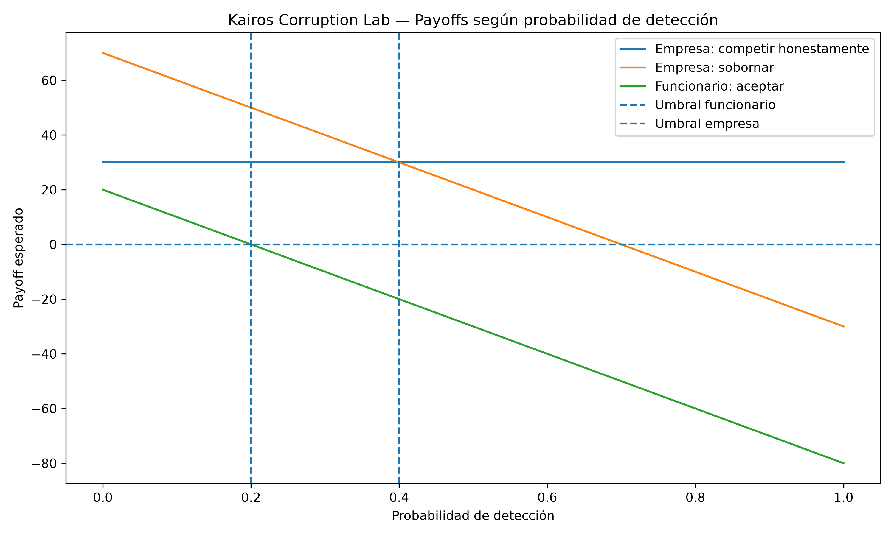
Umbrales teóricos
Funcionario. Acepta si \(B - pF_F > 0\). El umbral es:
Empresa. Sobornar resulta preferible si \(q_C\pi - B - pF_E > q_H\pi\). Reordenando:
Regiones estratégicas
Con una sanción común \(F\), aparecen tres regiones:
- Región I — corrupción sostenible. La empresa quiere sobornar y el funcionario quiere aceptar.
- Región II — intento sin contraparte. La empresa mantiene el incentivo a sobornar, pero el funcionario rechaza.
- Región III — comportamiento honesto. La empresa tampoco encuentra rentable sobornar.
Las fronteras entre regiones son:
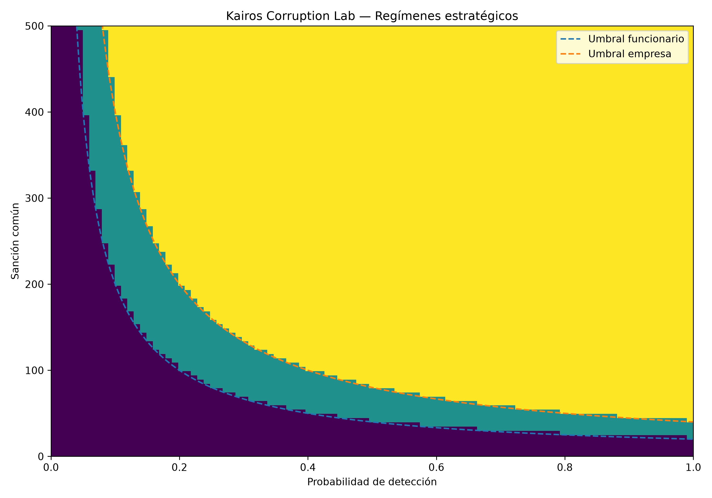
Mercado sintético de compras públicas
Se construyen 100 licitaciones con 5 empresas cada una, para un total de 500 ofertas sintéticas, con semilla reproducible \(\texttt{seed}=42\). Las variables se generan como:
Función de valor público
Para cada licitación se transforma el precio en un puntaje relativo:
El puntaje de bajo riesgo es \(LowRisk_i = 100 - Risk_i\). El valor público de cada oferta es:
La empresa con \(\max_i PV_i\) gana bajo contratación honesta.
Validación determinista del mecanismo de adjudicación
Antes de generar las 100 licitaciones se utiliza un benchmark de cinco empresas para verificar que el mecanismo funciona como se espera:
| Firma | Valor público |
|---|---|
| A | 67.50 |
| B | 69.50 |
| C | 69.00 |
| D | 72.75 |
| E | 66.00 |
La empresa D gana. Este ejemplo demuestra que el algoritmo no selecciona mecánicamente el precio más bajo, la calidad más alta ni la mayor experiencia: selecciona la oferta con mayor valor público compuesto.
results_final/main/honest_market.csv
Benchmark honesto de 100 licitaciones
| Métrica | Valor |
|---|---|
| Valor público total | 8197.05 |
| Valor público promedio | 81.97 |
| Valor público mediano | 81.27 |
| Gasto agregado | 70548.68 |
| Precio promedio ganador | 705.49 |
| Calidad promedio | 78.97 |
| Experiencia promedio | 76.20 |
| Riesgo promedio | 22.99 |
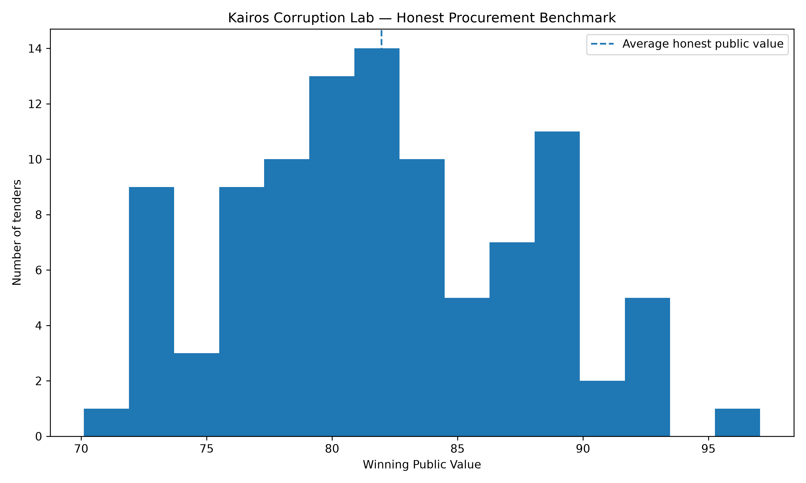
Integración de corrupción al mercado
Para introducir heterogeneidad en el incentivo privado se define:
Una vez determinado el ganador honesto, únicamente las empresas perdedoras pueden intentar alterar la adjudicación. El payoff de soborno para la empresa \(i\) es:
La alternativa honesta de una empresa que ya perdió se normaliza a \(0\). Entre las empresas perdedoras con \(EU_i(Bribe) > 0\), se selecciona la de mayor payoff corrupto. El funcionario acepta si \(B - pF_F > 0\).
Resultado del mercado corrupto
Escenario: \(p=10\%,\ F_E=F_F=100,\ B=20\).
| Métrica | Valor |
|---|---|
| Intentos | 100 |
| Sobornos aceptados | 100 |
| Adjudicaciones distorsionadas | 100 |
| Valor público honesto | 8197.05 |
| Valor público corrupto | 5653.88 |
| Pérdida | 2543.17 (31.03%) |
| Pérdida media por licitación distorsionada | 25.43 |

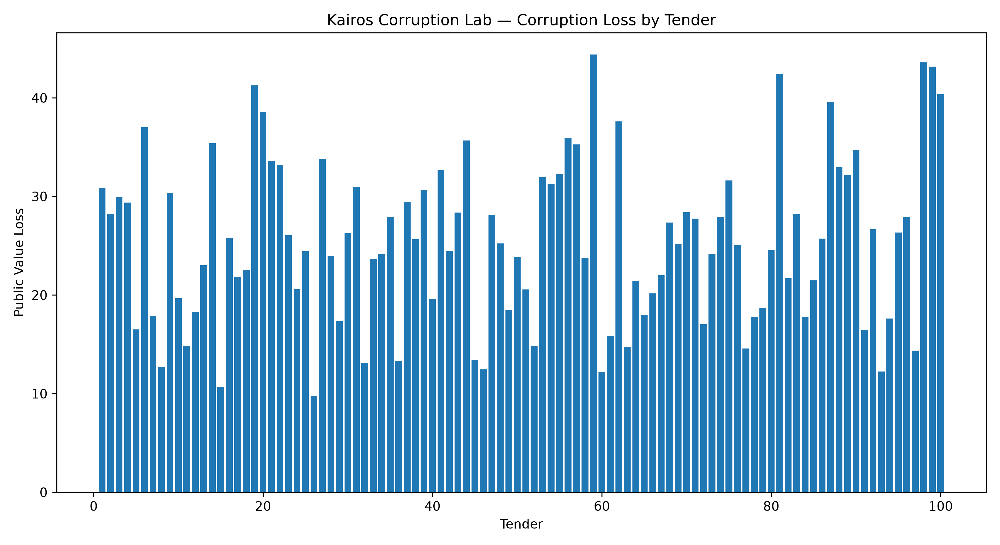
Interpretación de la pérdida
Los sobornos transferidos suman \(100 \times 20 = 2000\). Sin embargo, no deben sumarse a los 2543.17 de pérdida como si fueran pérdidas independientes.
Experimento 6 — barrido de detección
Se mantiene \(F=100\) y se varía \(p \in [0,1]\) en pasos de \(0.05\).
Para \(p < 20\%\): 100 sobornos aceptados, 100 distorsiones, \(PV=5653.88\). En \(p=20\%\), el payoff del funcionario llega a \(0\) y la corrupción efectiva desaparece; desde entonces, \(PV=8197.05\).

Experimento 7 — barrido de sanciones
Se fija \(p=10\%\) y se varía \(F \in [0,2000]\). El funcionario deja de aceptar en \(F=\boxed{200}\), pero las empresas mantienen incentivos durante mucho más tiempo: primera reducción en empresas dispuestas en \(F=\boxed{1125}\), y cero empresas dispuestas en \(F=\boxed{1700}\).
Esto separa willingness (disposición a sobornar) de successful corruption (corrupción efectivamente lograda).

Experimento 8A — política combinada
Se construye una cuadrícula completa de políticas:
Para los experimentos conjuntos de política se impone una sanción común a empresa y funcionario, de modo que \(F_E = F_F = F\).
Número total de políticas evaluadas:
Para cada política se calculan: Attempts, Accepted, Distorted, PublicValue y Loss.
Equivalencia estratégica
Se verifican tres políticas equivalentes:
Todas cumplen \(pF=20\). En las tres, \(EU_F(A)=0\) y, bajo la convención estricta del modelo, Accepted=0, Distorted=0 y \(PV=8197.05\).
De las 1701 políticas evaluadas, 146 generaron alguna distorsión y 1555 ninguna.
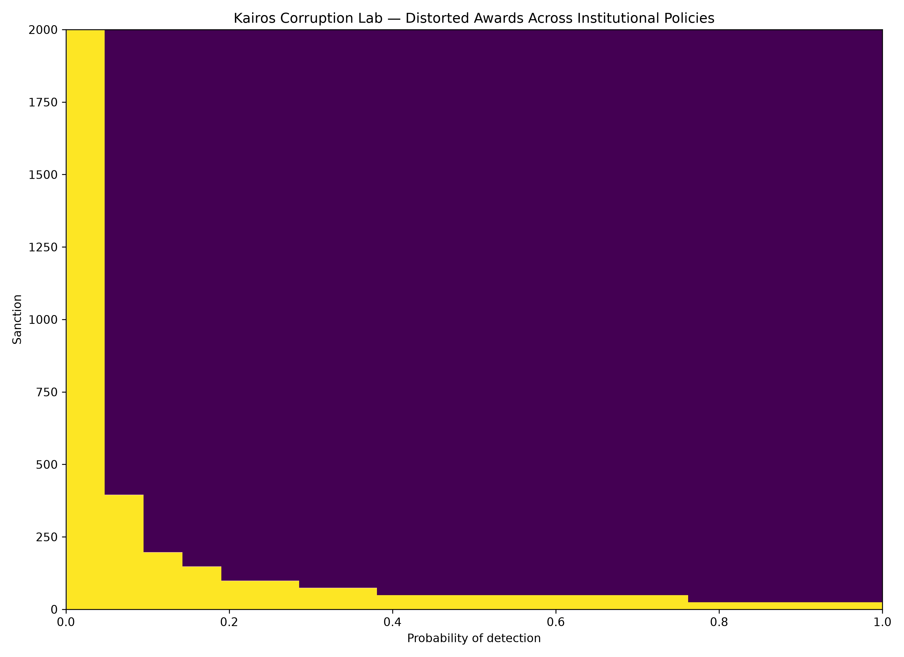
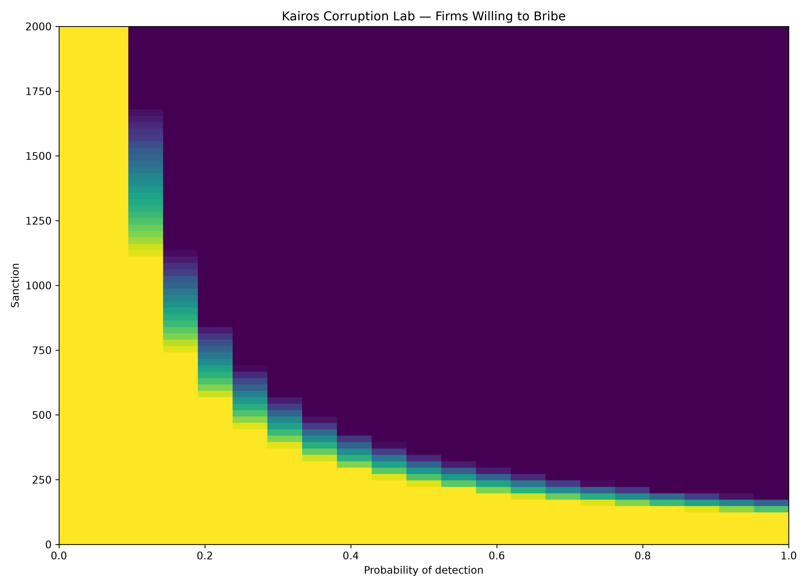
Experimento 8B — costos institucionales
Funciones de costo sintéticas:
Valor público neto:
Dentro de esta cuadrícula de políticas y bajo estas funciones de costo sintéticas, el óptimo de costos base resulta en:
| Componente | Valor |
|---|---|
| Costo de detección | 40 |
| Costo de sanción | 50 |
| Costo institucional total | 90 |
| Valor público bruto | 8197.05 |
| Valor público neto | 8107.05 |

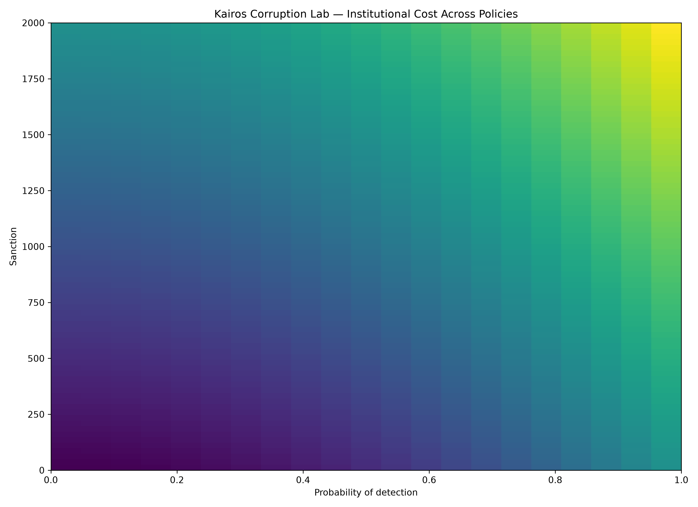
El problema del control insuficiente
| Escenario | Costo institucional | Valor público | Valor neto |
|---|---|---|---|
| Baseline (p=10%, F=100) | 60 | 5653.88 | 5593.88 |
| Sin control (p=0, F=0) | 0 | 5653.88 | 5653.88 |
Así, \(5593.88 < 5653.88\). Dentro del modelo, una política puede tener \(Cost > 0\) mientras que \(\Delta Behavior = 0\); por tanto \(\Delta PV = 0\) antes de costos, y el resultado neto empeora.
Experimento 8C — sensibilidad
Se varían \(\alpha \in \{500,1000,2000\}\) y \(\beta \in \{0.25,0.50,1.00\}\): nueve estructuras de costo distintas. Dentro de la cuadrícula evaluada, solo aparecen dos políticas óptimas:
Ambas cumplen \(pF=20\), y todas las políticas óptimas producen 0 adjudicaciones distorsionadas. Interpretación:
- Cuando detectar se vuelve relativamente caro: \(p^{*}\downarrow,\ F^{*}\uparrow\).
- Cuando sancionar es relativamente caro: \(p^{*}\uparrow,\ F^{*}\downarrow\).
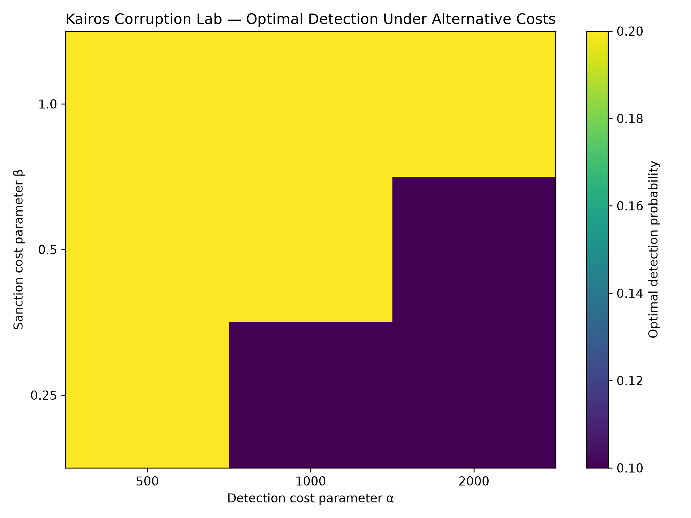
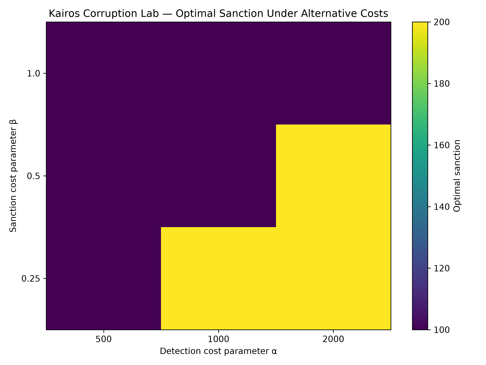
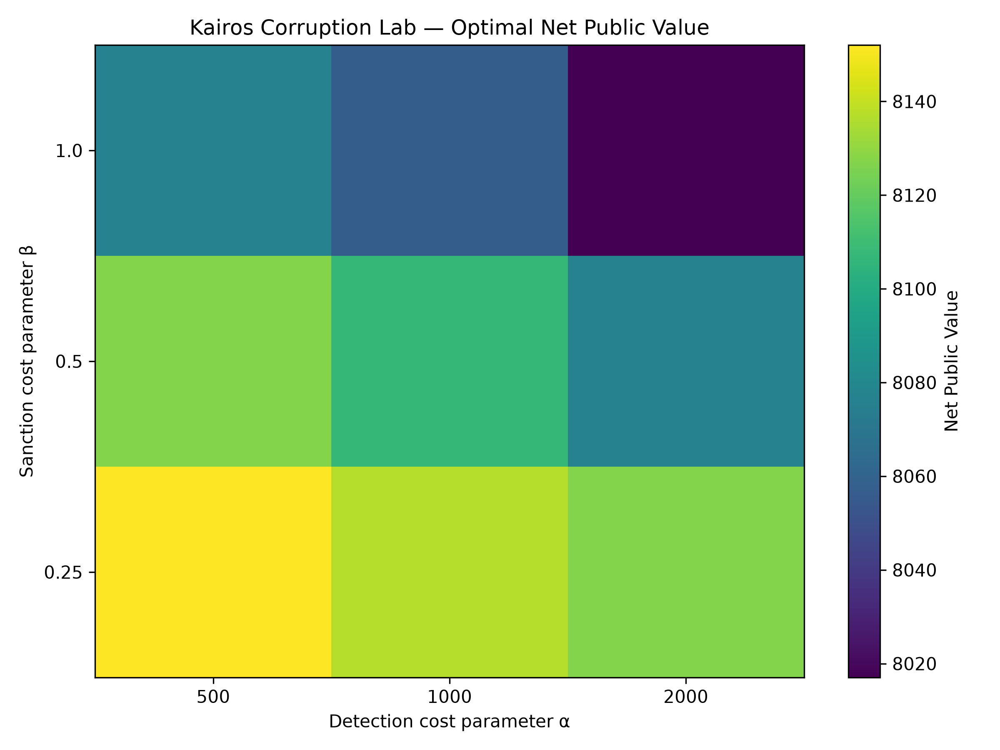
Dinámica — Experimento 9B
Se construye un juego repetido de 100 rondas, con una reforma en \(t=51\):
El mercado sintético permanece fijo a lo largo de las 100 rondas, de modo que los cambios observados después de la reforma no provienen de cambios en la composición del mercado, sino del nuevo entorno institucional y de la adaptación conductual.
Propensión conductual
Cada empresa tiene una propensión \(s_{i,t} \in [0,1]\), inicialmente \(s_{i,0}=0.50\), con umbral de intento \(s_i \geq 0.25\). Tras un intento exitoso:
Tras un rechazo:
Una empresa solo puede intentar sobornar si es una perdedora elegible, su payoff corrupto es positivo y su propensión alcanza al menos el umbral de 0.25. Cuando varias empresas cumplen estas condiciones dentro de una licitación, el candidato corrupto se selecciona mediante un puntaje estratégico definido como:
La empresa con mayor puntaje estratégico realiza el intento.
Elegibilidad
Hay 500 empresas en total. Como cada una pertenece a una única licitación y existe un ganador honesto fijo, 100 son ganadoras honestas. Por tanto, 400 son empresas perdedoras elegibles para intentar corromper. La dinámica conductual relevante se mide sobre estas 400.
Resultados pre-reforma
Durante las rondas 1–50, cada ronda repite: 100 intentos, 100 aceptaciones, 100 distorsiones.
| Métrica | Total en 50 rondas |
|---|---|
| Intentos | 5000 |
| Aceptaciones | 5000 |
| Distorsiones | 5000 |
| Pérdida acumulada | 127158.39 |
| Valor público medio por ronda | 5653.88 |
Reforma institucional
En \(t=51\), el castigo esperado pasa de \(10\) a \(20\). El funcionario deja de aceptar inmediatamente:
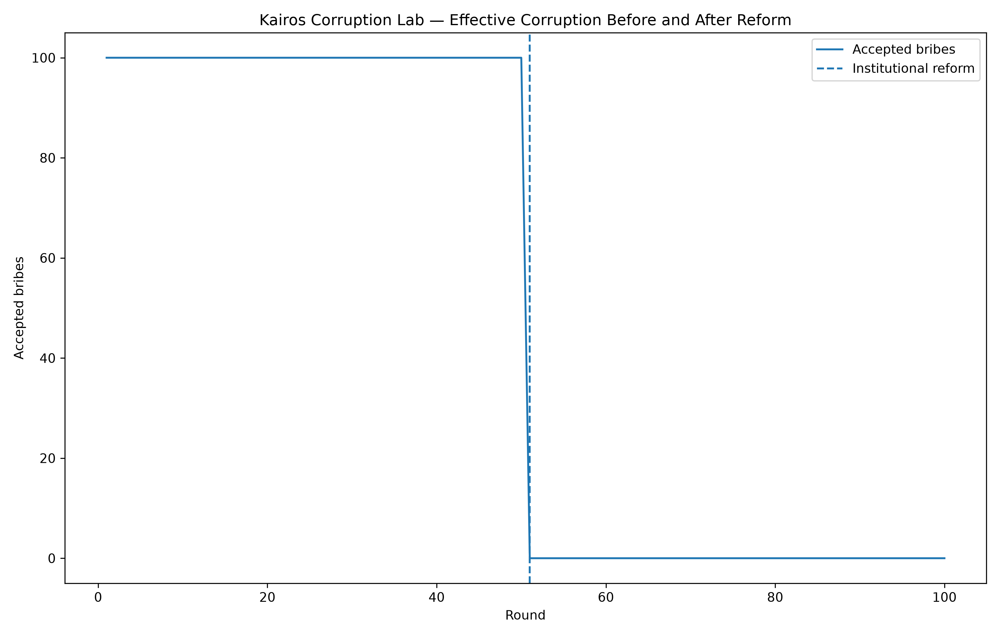

Persistencia conductual
Los intentos de soborno no desaparecen inmediatamente tras la reforma:
| Ronda | 60 | 65 | 70 | 75 | 80 |
|---|---|---|---|---|---|
| Intentos | 100 | 53 | 26 | 10 | 0 |
| Hito | Ronda |
|---|---|
| Primer descenso por debajo de 100 intentos | 61 |
| Menos de 200 empresas elegibles sobre el umbral | 64 |
| Primera ronda sin intentos | 80 |
| Retraso adaptativo (80 − 51) | 29 |

Estado conductual
Empresas elegibles con propensión sobre el umbral, por ronda:
| Ronda | 51 | 60 | 65 | 70 | 75 | 80 |
|---|---|---|---|---|---|---|
| Empresas elegibles | 400 | 286 | 135 | 60 | 11 | 0 |

La propensión media entre las empresas elegibles pasa de 0.566 en la ronda 51 a 0.221 en la ronda 100.
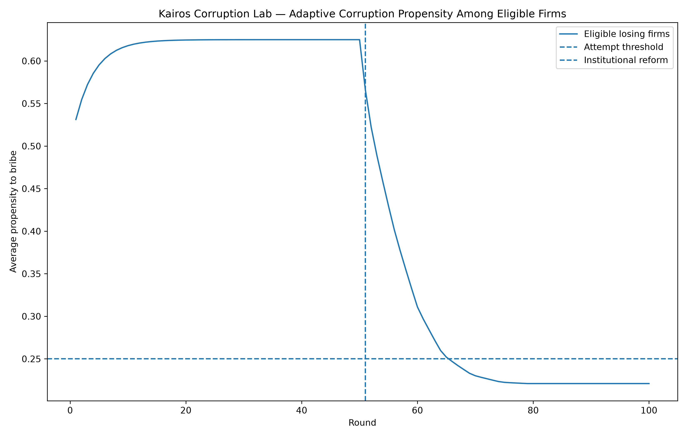
Separación entre efecto institucional y adaptación
Este es uno de los resultados conceptuales centrales del experimento. La reforma produce un efecto institucional inmediato sobre Accepted, Distorted y PublicValue. La conducta empresarial, en cambio, presenta una adaptación gradual en Attempts y en la propensión.
Los outcomes pueden ajustarse más rápidamente que el behavior.
Validaciones
El código verifica, mediante assert, las siguientes condiciones:
- tamaño correcto del mercado;
- cinco ofertas por licitación;
- benchmark honesto constante;
- contabilidad de pérdida;
- reproducción del escenario base;
- umbral del funcionario;
- equivalencia de políticas;
- resultados del Experimento 8B;
- número correcto de escenarios;
- tamaño correcto de las series dinámicas;
- recuperación del benchmark después de la reforma.
Resultados principales
| Resultado | Valor |
|---|---|
| Licitaciones | 100 |
| Ofertas | 500 |
| PV honesto | 8197.05 |
| PV corrupto | 5653.88 |
| Pérdida | 2543.17 |
| Pérdida % | 31.03% |
| Umbral detección funcionario | 20% |
| Umbral detección empresa (juego mínimo) | 40% |
| Umbral sanción funcionario con p=10% | 200 |
| Primera reducción de empresas dispuestas | 1125 |
| Cero empresas dispuestas | 1700 |
| Políticas combinadas evaluadas | 1701 |
| Óptimo de costos base | p=20%, F=100 |
| NetPV óptimo | 8107.05 |
| Rondas dinámicas | 100 |
| Ronda de la reforma | 51 |
| Primer descenso en intentos | 61 |
| Cero intentos | 80 |
| Retraso adaptativo | 29 rondas |
Limitaciones
- Utiliza parámetros sintéticos.
- No está calibrado empíricamente.
- Mantiene fijo el mercado durante las rondas dinámicas.
- Permite corrupción únicamente después de la evaluación honesta.
- Permite que solo empresas perdedoras intenten sobornar.
- Utiliza un solo funcionario representativo.
- No incluye colusión empresarial.
- No incluye redes de corrupción.
- No incluye incertidumbre estratégica compleja.
- No modela investigación judicial.
- No modela reputación real.
- No incluye entrada o salida de empresas.
- Utiliza una regla adaptativa sintética.
- No estima duración real de adaptación.
- No evalúa instituciones reales.
Interpretación
La conclusión no debe ser que aumentar sanciones elimina la corrupción. Debe ser más precisa: dentro de esta economía artificial, la corrupción surge cuando los incentivos de ambas partes son compatibles con la transacción.
De ahí se desprenden varios mecanismos: romper una sola mejor respuesta puede bloquear la corrupción efectiva, pero eliminar el incentivo privado por completo puede requerir instituciones mucho más fuertes.
Además, disuasión y eficiencia institucional son problemas diferentes: una política puede ser disuasoria y aun así no ser eficiente si su costo es excesivo.
Conclusión
El laboratorio muestra que la corrupción puede analizarse como un problema de compatibilidad estratégica entre incentivos privados e institucionales.
Bajo instituciones débiles, tanto la empresa como el funcionario encuentran rentable participar, y el mecanismo desplaza contratos hacia empresas con menor valor público.
Cambiar la probabilidad de detección o la sanción puede romper esa compatibilidad. Sin embargo, cuando se incorporan costos institucionales, la política relevante ya no es simplemente maximizar vigilancia o castigo, sino encontrar una combinación que modifique incentivos con el menor costo posible.
Finalmente, el experimento dinámico muestra que una reforma puede modificar inmediatamente los resultados aun cuando los agentes tarden en ajustar su comportamiento.
El objetivo del ejercicio no es identificar parámetros óptimos para una economía real, sino demostrar cómo teoría de juegos, simulación computacional y análisis institucional pueden combinarse para estudiar mecanismos de corrupción de manera transparente y reproducible.
Reproducibilidad
El experimento fue construido en Python, utilizando principalmente numpy, pandas y matplotlib, con estructura modular:
src/ ├── game.py ├── market.py ├── corruption.py ├── analysis.py ├── sanctions.py ├── policy.py ├── cost.py ├── cost_sensitivity.py ├── dynamics.py ├── select_figures.py └── select_results.py
Los outputs finales están organizados en figures_final/ y results_final/.
Código y datos
El código, los resultados y las figuras del experimento están disponibles públicamente en Kairos Labs para su reproducción y revisión.
Esta investigación técnica documenta un experimento computacional de teoría de juegos. Ningún resultado numérico presentado debe interpretarse como una estimación de corrupción real en Guatemala ni en ningún otro país; todos los parámetros y funciones de costo son sintéticos y fueron elegidos para estudiar mecanismos de incentivos, no para calibrar un contexto real.